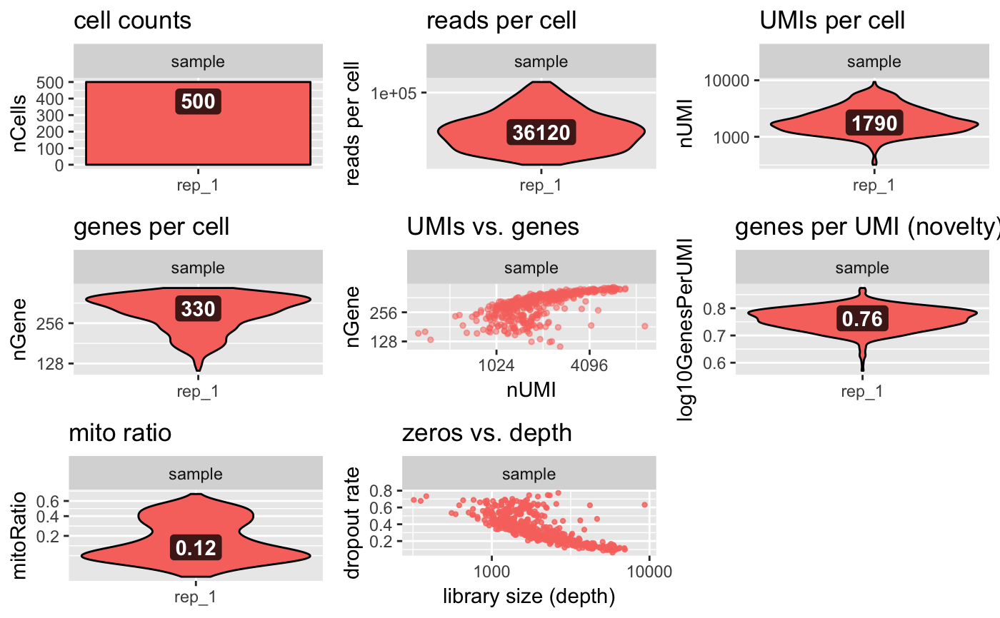

Quality Control Plots
Utility function that loops our standard quality control plots, for easy visualization.
# S4 method for bcbioSingleCell plotQC(object, interestingGroups, geom = "violin", headerLevel = 2L, legend = FALSE, return = "grid") # S4 method for seurat plotQC(object, interestingGroups, geom = "violin", headerLevel = 2L, legend = FALSE, return = "grid")
Arguments
| object | Object. |
|---|---|
| interestingGroups | Interesting group, to use for colors. |
| geom | Plot type. Supported formats: |
| headerLevel | R Markdown header level. |
| legend | Include plot legend. |
| return |
|
Value
R Markdown template code for quality control analysis.
Examples
load(system.file("extdata/bcb.rda", package = "bcbioSingleCell")) load(system.file("extdata/seurat.rda", package = "bcbioSingleCell")) # bcbioSingleCell plotQC(bcb)#> Warning: Failed to detect cellular barcode cutoff# seurat plotQC(seurat)#>